SOCA Control — User Guide¶
soca-control is the Central Fleet Dashboard. It aggregates detection events, alerts, and live streams from all edge nodes (soca-dashboard instances) into one central view. Use it for fleet-wide monitoring, compliance reporting, and system administration across multiple sites.
URL: http://<control-server>:8000
1. Logging In¶
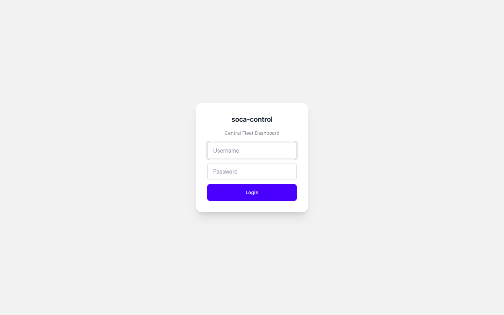
Enter your username and password, then click Login. The system supports two roles:
| Role | Access |
|---|---|
| Admin | Full access — dashboard, live streams, assets, reports, settings, users |
| Viewer | Read-only — dashboard, live streams, assets, reports |
2. Dashboard¶
After login you land on the Dashboard — the command centre for all edge nodes.
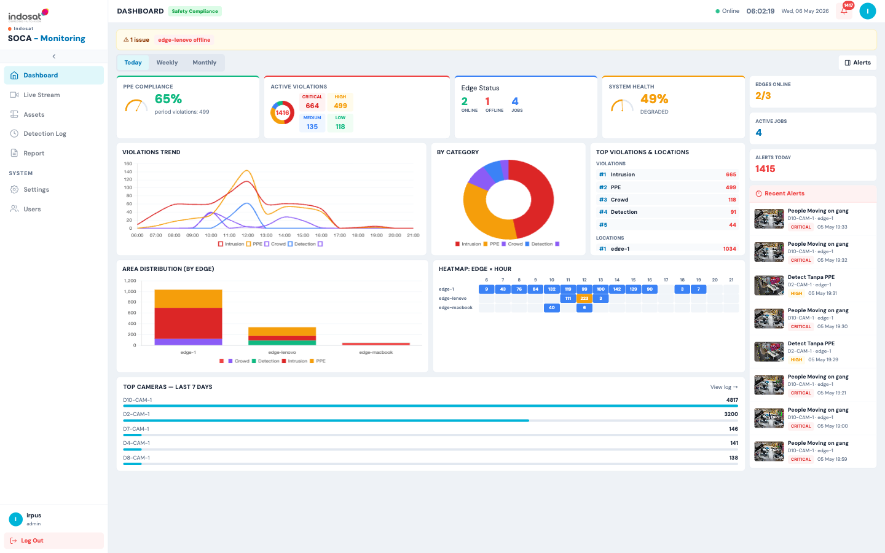
Top Bar¶
| Element | Description |
|---|---|
| Status dot (green/red) | Real-time connection to soca-service backend |
| Clock | Current server time |
| Bell icon | Alert notification count — click to view recent alerts |
Summary Widgets¶
| Widget | Description |
|---|---|
| PPE Compliance | Compliance rate as a percentage with period violation count |
| Active Violations | Total violations broken down by severity: Critical, High, Medium, Low |
| Edge Status | Number of online / offline edges and total active jobs |
| System Health | Aggregate health percentage across all edges |
Right Panel — Quick Alerts¶
A live feed of the latest detection events across all edges. Each entry shows a snapshot thumbnail, rule name, camera, edge, severity badge, and timestamp.
Charts¶
| Chart | What it shows |
|---|---|
| Violations Trend | Hourly violation counts by category (Intrusion, PPE, Crowd, Detection) |
| By Category | Donut chart — proportion of each violation type |
| Top Violations & Locations | Ranked list of violation types and most-affected edge locations |
| Area Distribution (by Edge) | Stacked bar chart — violation volume per edge, split by category |
| Heatmap: Edge × Hour | Colour-coded grid — when each edge generates the most events |
| Top Cameras — Last 7 Days | Bar chart of cameras ranked by total detection events |
Time Filter¶
Switch between Today, Weekly, and Monthly views using the tabs at the top of the chart area.
⚠ Edge offline banner — if an edge goes offline, a warning banner appears at the top of the dashboard.
3. Live Stream¶
Live Stream shows real-time video feeds aggregated from all connected edge nodes.
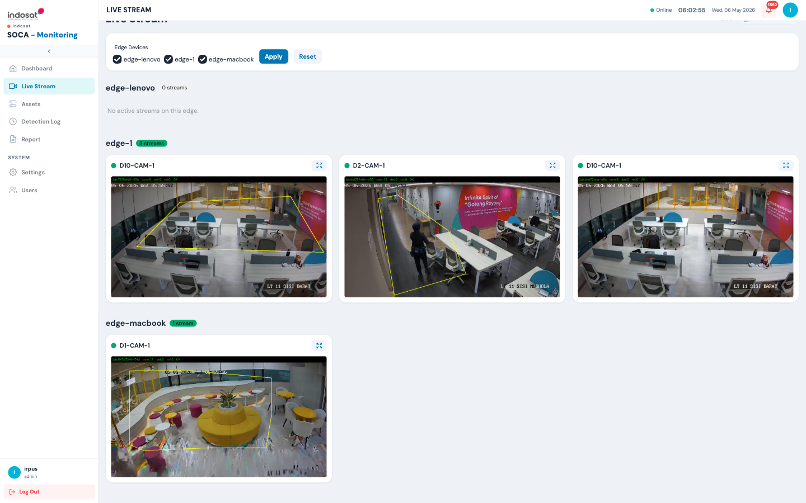
Filtering by Edge¶
Use the Edge Devices checkboxes at the top to show or hide streams from specific edges. Click Apply to filter, Reset to show all.
Stream Cards¶
Each card shows: - Camera name and edge label - Live video frame with detection overlays (ROI polygon, bounding boxes) - Green dot = stream is active
Click the expand icon (⤢) on any card to open the stream in full-screen view.
Edges with no active streams show a "No active streams on this edge" message.
4. Assets¶
Assets provides a fleet-wide inventory of all cameras across all edge nodes.
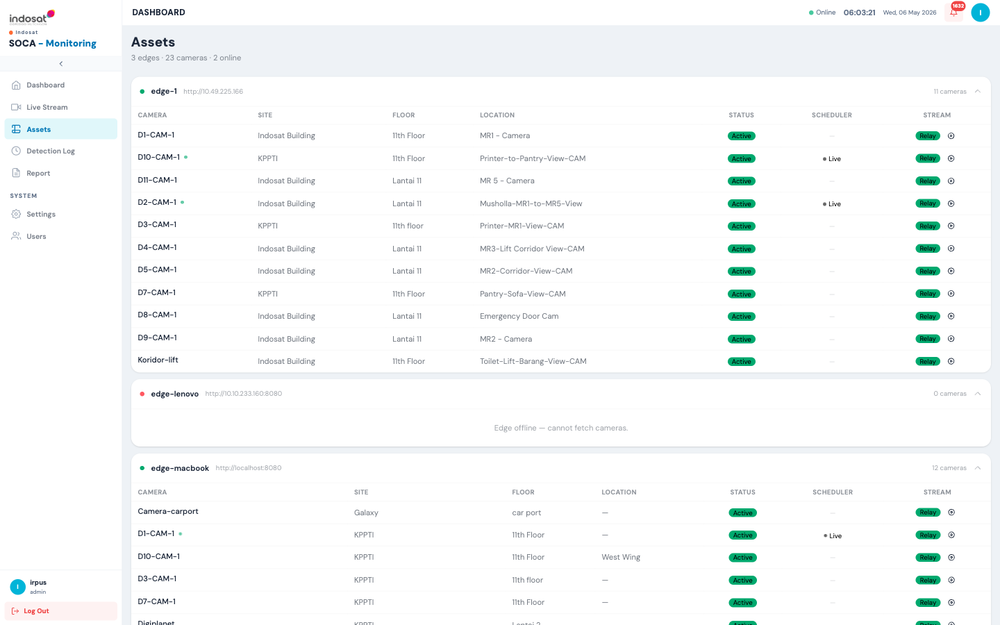
For each edge the list shows: - Edge name and URL - Online/Offline status (green/red dot) - For each camera: Name, Site, Floor, Location, Status, Scheduler state, Stream type
| Column | Description |
|---|---|
| Status | Active / Inactive — pulled live from the edge |
| Scheduler | Whether a detection job is running (• Live = active job) |
| Stream | Relay = streamed via mediamtx relay; click the ⓘ icon for the stream URL |
Offline edges display "Edge offline — cannot fetch cameras" and cannot be managed until reconnected.
5. Detection Log¶
Detection Log is the unified event log for all edges — every detection event from every camera in one place.
Access via the sidebar: Detection Log
Columns include: Timestamp, Edge, Camera, Rule, Category, Message, Violation labels, Count, and a Snapshot thumbnail.
Filter controls at the top allow narrowing by edge, camera, date range, category, and free-text search.
6. Reports¶
The Report section provides dedicated analytics pages per detection category. All reports support CSV export and can be filtered by edge, camera, and date range.
6.1 Intrusion Report¶
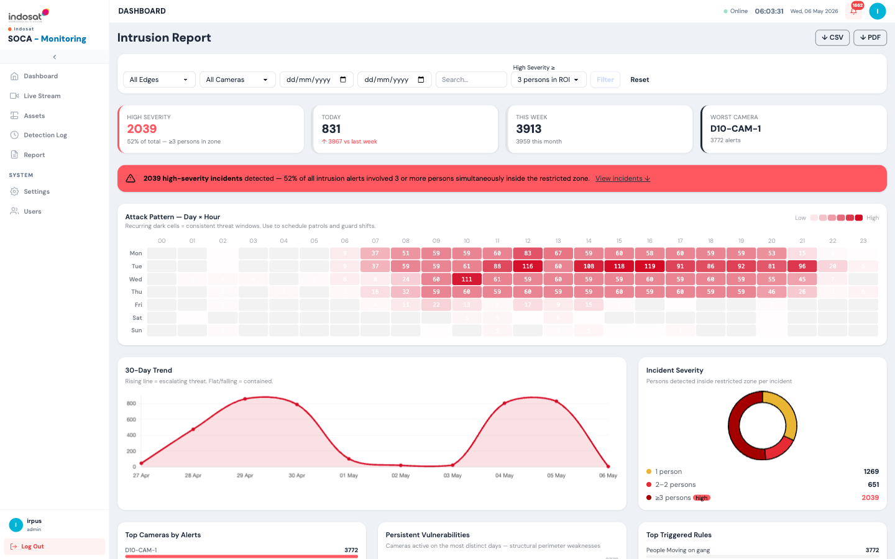
| Widget | Description |
|---|---|
| High Severity | Events where ≥3 persons were detected simultaneously in the restricted zone |
| Today / This Week | Rolling counts with week-on-week comparison |
| Worst Camera | Camera with the highest alert count |
| Attack Pattern — Day × Hour | Heatmap identifying recurring intrusion windows — use to schedule patrols |
| 30-Day Trend | Rising line = escalating threat; falling = contained |
| Incident Severity | Donut — breakdown by 1, 2–2, and ≥3 persons per incident |
| Top Cameras by Alerts | Ranked list |
| Persistent Vulnerabilities | Cameras active on most distinct days — structural weaknesses |
| Top Triggered Rules | Which detection rules fire most often |
Export options: ↓ CSV and ↓ PDF (top-right).
6.2 PPE Compliance Report¶
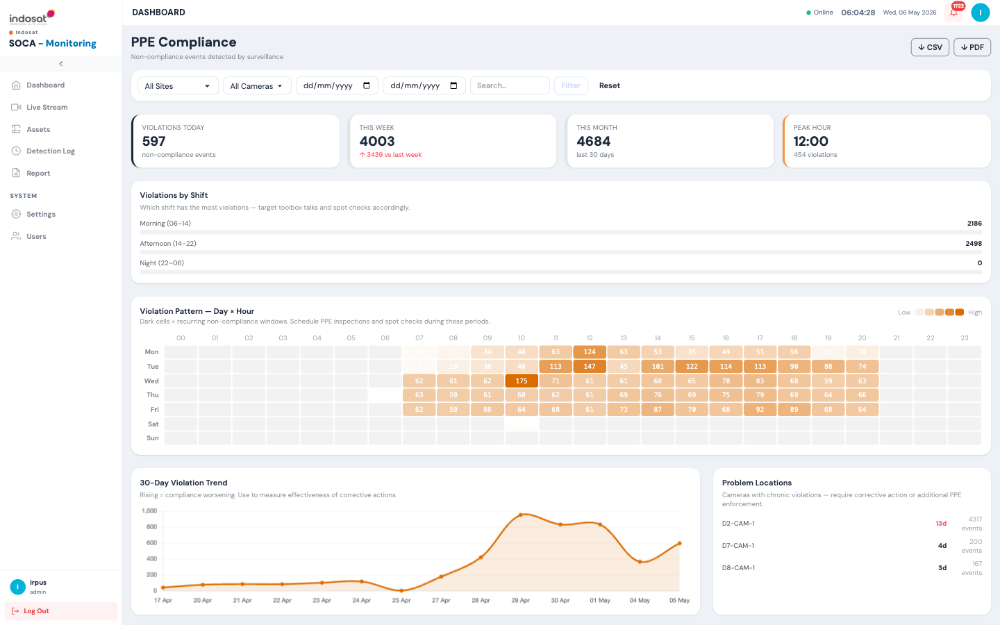
| Widget | Description |
|---|---|
| Violations Today / This Week / This Month | Rolling counts |
| Peak Hour | Hour of day with the most PPE violations |
| Violations by Shift | Morning (06–14), Afternoon (14–22), Night (22–06) — target toolbox talks accordingly |
| Violation Pattern — Day × Hour | Heatmap of recurring non-compliance windows |
| 30-Day Violation Trend | Rising = compliance worsening |
| Problem Locations | Cameras with chronic violations — persistent offenders |
| Daily Summary | Per-day count with recommended action (Monitor / Corrective action) |
| Violation Log | Paginated event log with site, camera, rule, violation label, message, and evidence thumbnail |
6.3 Crowd Detection Report¶
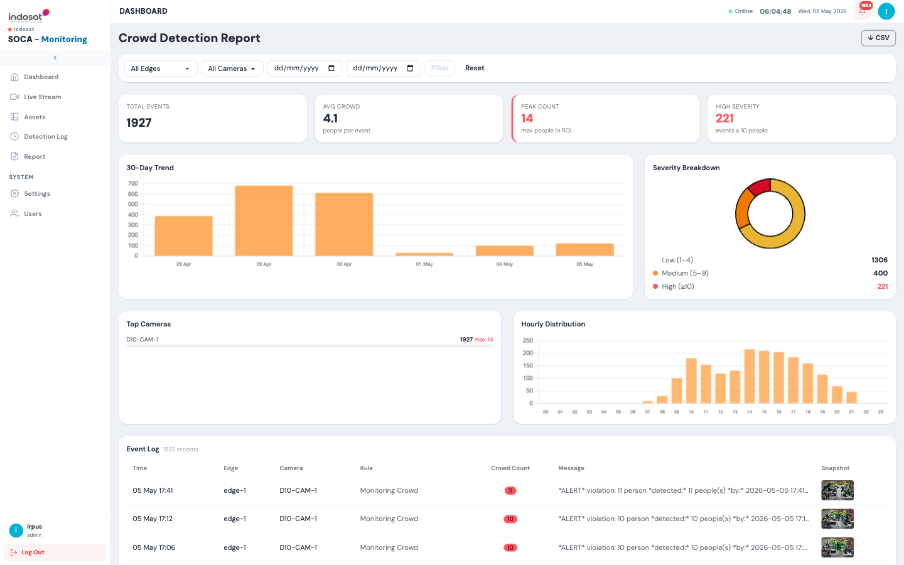
| Widget | Description |
|---|---|
| Total Events | All crowd detection events in the period |
| Avg Crowd | Average people per detection event |
| Peak Count | Maximum simultaneous people detected in ROI |
| High Severity | Events with ≥10 people |
| 30-Day Trend | Bar chart of daily crowd events |
| Severity Breakdown | Donut — Low (1–4), Medium (5–9), High (≥10) |
| Top Cameras | Ranked by event count with peak count |
| Hourly Distribution | Bar chart — when crowd events peak during the day |
| Event Log | Time, Edge, Camera, Rule, Crowd Count, Message, Snapshot |
6.4 License Plate Recognition (LPR) Report¶
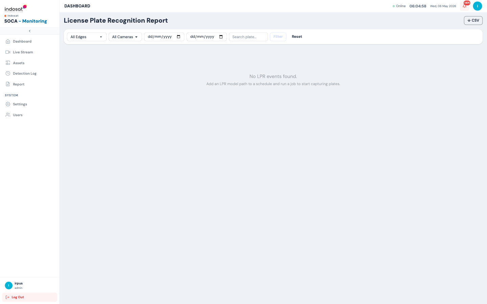
Displays all captured license plate events. Filter by edge, camera, date range, or search for a specific plate number.
If no LPR events are shown, ensure a schedule has an LPR Model Path configured and the job is running.
Export: ↓ CSV
6.5 People Counting Report¶
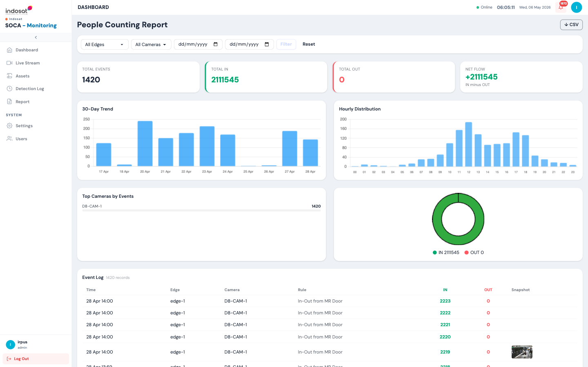
| Widget | Description |
|---|---|
| Total Events | Number of crossing-line events |
| Total IN / OUT | Cumulative people counted entering and leaving |
| Net Flow | IN minus OUT — net occupancy change |
| 30-Day Trend | Daily event bar chart |
| Hourly Distribution | When foot traffic peaks |
| Top Cameras by Events | Ranked list |
| Event Log | Time, Edge, Camera, Rule, IN count, OUT count, Snapshot |
Export: ↓ CSV
7. Settings¶
Settings — CV Control Plane provides system-level configuration for the control server.
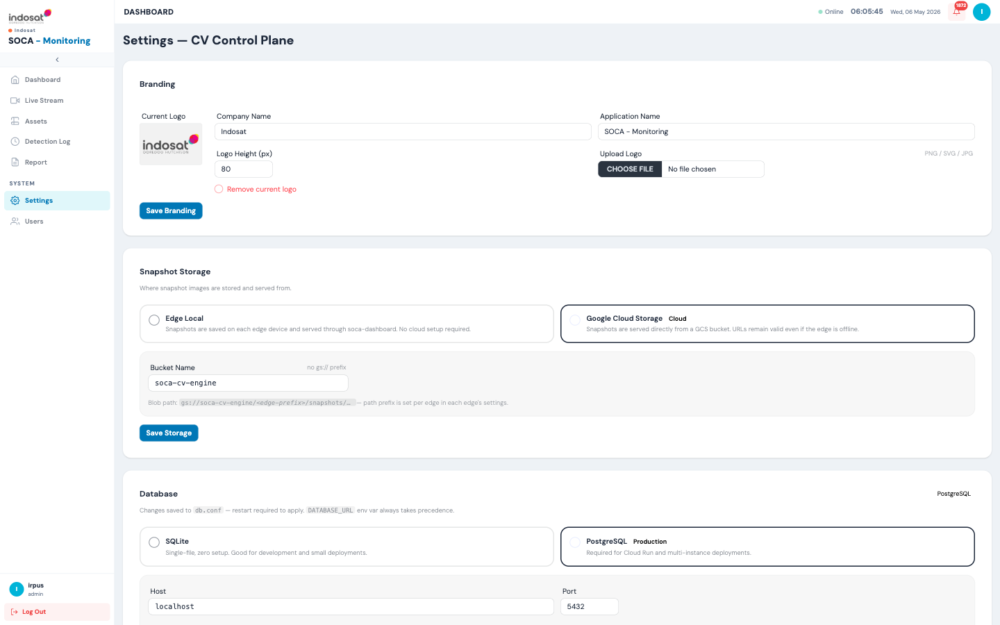
| Section | Purpose |
|---|---|
| Branding | Change company name, application name, and logo |
| Snapshot Storage | Choose where alert snapshots are stored: Edge Local (served through each soca-dashboard) or Google Cloud Storage (GCS bucket, always accessible even when edge is offline) |
| Database | Switch between SQLite (dev/small deployments) and PostgreSQL (production/Cloud Run). Changes require a service restart |
| Pub/Sub | Configure Google Cloud Pub/Sub subscription details for receiving detection events from edges |
| Ingest Key | Generate and push the ingest API key used by soca-ingest to authenticate event delivery |
| Edge Nodes | List of registered edge nodes — edit URL, name, GCS prefix, or delete an edge |
| Edge Operations | Per-edge: start/stop individual schedules remotely, trigger local or remote snapshot purges |
| soca-service | Configure the path and URL to the soca-service microservice (used for detection log aggregation) |
7.1 Configure Snapshot Storage¶
- Go to Settings.
- Under Snapshot Storage, select Google Cloud Storage for cloud deployments.
- Enter the Bucket Name (without
gs://prefix). - Click Save Storage.
7.2 Register a New Edge¶
- In Settings, scroll to Edge Nodes.
- Click Add Edge and fill in the edge name and dashboard URL (e.g.
http://<edge-ip>:8080). - Configure the GCS snapshot prefix for that edge.
- Click Save.
7.3 Remote Edge Operations¶
- Go to Settings → Edge Operations (or click the operations icon next to an edge).
- View all schedules on that edge with their current status.
- Click Start or Stop next to any schedule to control it remotely.
- Use Purge Remote to delete snapshots from the edge's local storage, or Purge Local to remove data from the control database.
8. Users¶
Users manages who can access soca-control.
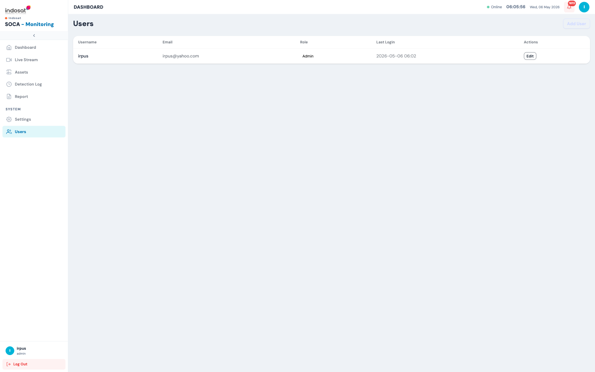
| Column | Description |
|---|---|
| Username | Login name |
| Contact email | |
| Role | Admin or Viewer |
| Last Login | Timestamp of most recent session |
| Actions | Edit user details |
8.1 Add a User¶
- Go to Users.
- Click Add User (top-right).
- Fill in username, email, password, and role.
- Click Save.
8.2 Edit a User¶
Click Edit next to any user to update their email, password, or role.
9. Common Tasks — Quick Reference¶
| Task | Where |
|---|---|
| View fleet-wide violation summary | Dashboard |
| Watch live cameras across all edges | Live Stream |
| See which cameras are online | Assets |
| Search all detection events | Detection Log |
| Export intrusion incidents to PDF | Report → Intrusion → ↓ PDF |
| Check PPE compliance by shift | Report → PPE Compliance → Violations by Shift |
| Find peak crowd hours | Report → Crowd Detection → Hourly Distribution |
| Search for a license plate | Report → LPR → Search plate field |
| Measure foot traffic net flow | Report → People Counting |
| Add a new edge node | Settings → Edge Nodes → Add Edge |
| Stop a schedule on a remote edge | Settings → Edge Operations → Stop |
| Change snapshot storage to GCS | Settings → Snapshot Storage → Google Cloud Storage |
| Add a new control user | Users → Add User |
10. Troubleshooting¶
| Symptom | Likely cause | Fix |
|---|---|---|
| Edge shows offline in Assets | Edge dashboard unreachable | Check network connectivity to edge URL; verify soca-dashboard is running |
| No events in Detection Log | soca-ingest not delivering events | Check Settings → Ingest Key is correct; verify Pub/Sub subscription is active |
| Live stream shows no video | Edge schedule not running or Enable Monitor is off | Go to that edge's soca-dashboard and start a schedule with Enable Monitor enabled |
| Snapshots not loading in reports | GCS bucket misconfigured | Check Settings → Snapshot Storage bucket name and service account permissions |
| LPR report empty | No LPR-enabled schedules running | Edit a schedule on the edge, set an LPR Model Path, and start the job |
| PPE compliance % seems wrong | Date filter includes periods with no data | Reset the filter or adjust the date range |
| Dashboard shows degraded health | One or more edges are offline or have high error rates | Check Edge Status widget and investigate offline edges in Assets |